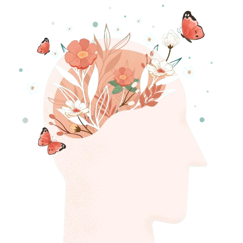

Psicóloga
Heliane Aparecida Mougenot Breviglieri Silva, CRP-08/19788, formada pela Faculdade Evangélica do Paraná.
Atua como psicóloga clinica em atendimento individual, casal e família. Escolheu ser psicóloga, pois acredita que o ser humano merece ter uma vida em abundância e que seus sofrimentos psicológicos precisam ser curados para que isso aconteça.
Com uma abordagem compassiva, empática e baseada em evidências, oferecendo um espaço seguro onde a cura e o crescimento pessoal podem florescer. Deixando-o pronto para conquistar uma vida mais gratificante e equilibrada.
Faculdade Evangélica do Paraná (FEPAR) - Brasil
Universidade Estadual de Maringá - Brasil
Universidade Positivo - Brasil
Instituto Homeopático François Lamasson - Brasil
Associação Paranaense De Terapia Familiar - Brasil
Centro Sofia Bauer - Brasil
Centro Sofia Bauer - Brasil
Centro Sofia Bauer - Brasil
Centro Sofia Bauer - Brasil
O objetivo da psicoterapia é elevar a saúde mental do indivíduo, criando condições para a aprendizagem de como enfrentar e resolver conflitos internos e externos, particularmente quando esse indivíduo tem dificuldade para estabelecer a forma mais adequada de resolvê-los.
Muitas pessoas ainda mantêm o antigo estigma de que o atendimento psicológico é reservado apenas para situações extremas de saúde mental. No entanto, a abordagem do tratamento psicológico atualmente se estende além do indivíduo isolado, alcançando grupos, famílias, organizações e outros contextos. Participar de uma sessão psicológica, desde a tomada de decisão até a plena participação, não é uma tarefa simples. Isso se deve principalmente à:
A abordagem utilizada é fundamentada na Terapia Familiar Sistêmica, na qual o foco é a subjetividade do indivíduo e suas interações com o meio familiar e social. Essa abordagem e complementada com outros conceitos e técnicas modernas, a exemplo de Neurociência, Tratamento do Trauma, Hipnoterapia Erickisoniana, Psicologia Positiva, Doenças Psicossomática e outros.
Em consonância com a regulamentação do Conselho Regional de Psicologia, o atendimento, tem duração de 50 minutos, e é feito através de comunicação remota, ou seja, online, com imagem e som, utilizando recursos como WhatsApp, Google Meet ou outros.
A pessoa pode cancelar a sessão ou mudar o seu horário até 24 horas antes do início estabelecido para o atendimento, sem que haja custo.
Por favor, entre em contato para verificar essa informação.